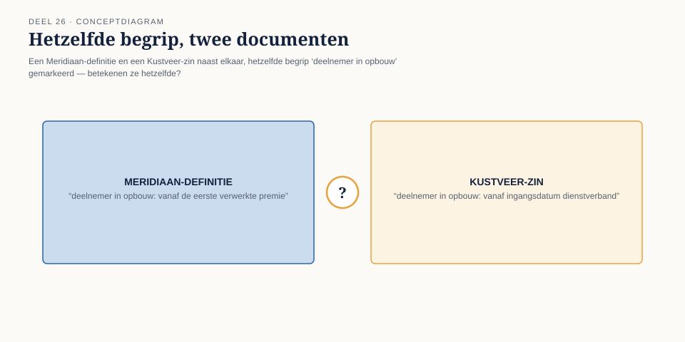
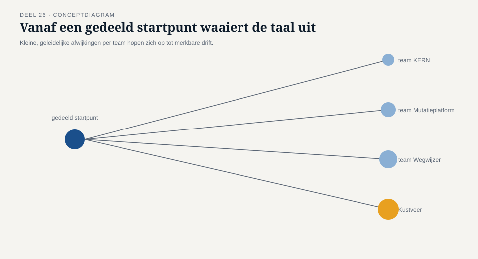
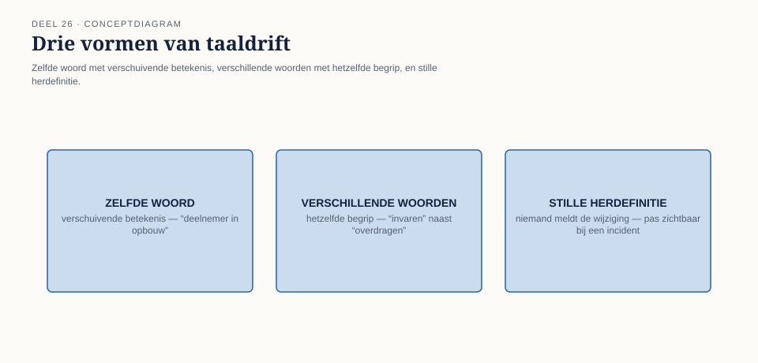
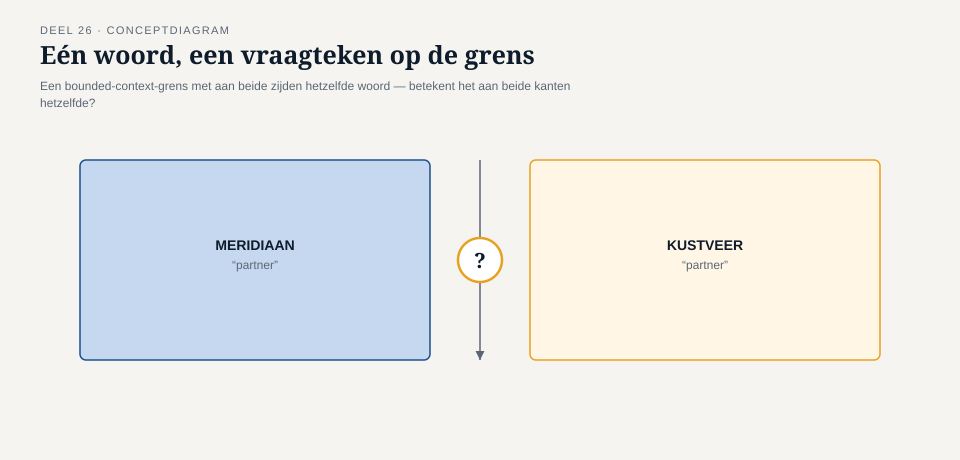
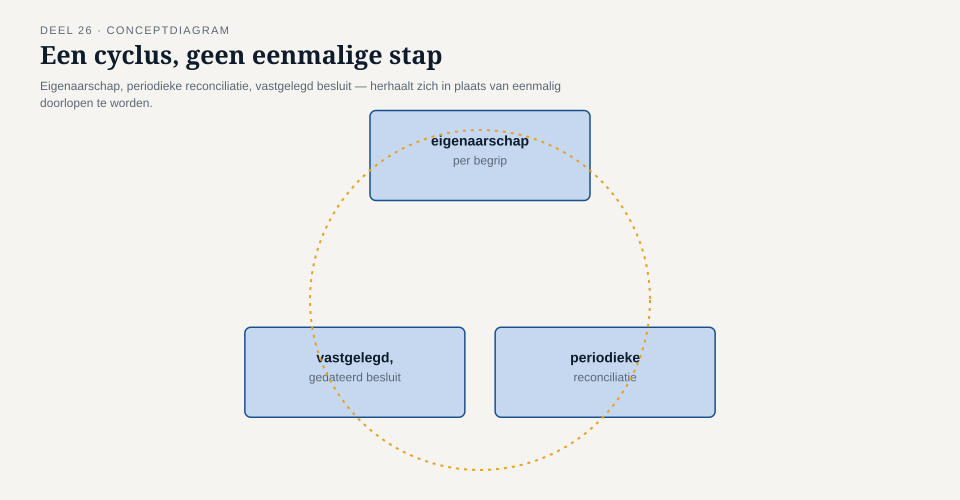

Deel 26 — Governance van een meerdere-teams-domeinmodel: taal-drift bewaken over de tijd
Reader · Ductus-cursus Domain-Driven Design · niveau 3 (expert) · deel 26 van 30
26.1 Waar dit deel over gaat
Iris’ vraag aan het eind van deel 25 — “als er straks een tweede bron van deelnemersmutaties bij dit landschap komt, geldt deze garantiekaart dan nog?” — kreeg op dat moment geen antwoord. Dit deel geeft het antwoord, en niet alleen voor de garantiekaart: voor het hele domeinmodel.
Een ubiquitous language, zoals niveau 1 deel 2 die introduceerde, is nooit een woordenboek dat je één keer vaststelt en daarna laat liggen. Het is een levende afspraak, gedragen door de mensen die er dagelijks in werken. Zolang die mensen in één team zitten, met dezelfde stand-up en dezelfde refinement, blijft een taal vanzelf redelijk gelijk — niet omdat niemand ooit een woord anders gebruikt, maar omdat afwijkingen snel worden opgemerkt en gecorrigeerd. Zodra een model door meerdere teams wordt gedragen — zoals het Meridiaan-landschap sinds niveau 2 — verdwijnt die vanzelfsprekende correctie. Elk team ontwikkelt, langzaam en zonder kwade wil, zijn eigen nuances. Dat proces heeft een naam: taal-drift. Het is geen fout die je één keer maakt en dan corrigeert. Het is een kracht die voortdurend werkt, net zoals eventual consistency in deel 25 een voortdurende, nooit afgeronde toestand was in plaats van een eenmalig probleem.
Dit deel behandelt hoe je die kracht niet stopt — dat kan niet — maar bewaakt: hoe je drift vroeg signaleert, hoe je onderscheidt tussen onschuldige nuance en een echte betekenisbreuk, en welke governance een domeinmodel nodig heeft om, jaren na de eerste EventStorming-sessie, nog steeds hetzelfde te betekenen voor iedereen die ermee werkt.
Aan het eind van dit deel kun je:
- uitleggen waarom taal-drift een onvermijdelijk gevolg is van een model dat door meerdere teams wordt gedragen, en waarom “eenmalig vaststellen” geen governance is;
- signalen van taal-drift herkennen: hetzelfde woord met verschuivende betekenis, verschillende woorden voor hetzelfde begrip, en stille herdefinitie zonder dat iemand het besluit;
- onderscheid maken tussen drift die onschuldig is en drift die een bounded-context-grens zelf raakt;
- met de taaldriftkaart een governance-ritueel opzetten dat drift periodiek opspoort in plaats van pas wanneer de schade al is opgetreden.
26.2 De casus: het bericht, en het eerste document
Uit het casusdossier: negen maanden vóór de Wtp-deadline van 1 januari 2028 neemt Meridiaan Pensioenfonds Kustveer over, een klein, zelfstandig fonds voor de kustvaart- en veerdienstensector.
Het bericht komt niet als verrassing — het bestuur heeft er de afgelopen weken al vaag naar verwezen, “een overnamekans in de sector,” zoals deel 23 afsloot. Wat wél als verrassing komt, is het tempo. Op een dinsdagochtend krijgt het architectuurteam een mail van Iris met als onderwerp “Bevestigd: Pensioenfonds Kustveer.” Geen aankondiging van een verkenning meer — een besluit. Meridiaan neemt Kustveer over, circa 14.000 deelnemers, effectief per direct wat governance betreft, met een sectorspecifieke administratie die vóór 1 januari 2028 op de een of andere manier het Meridiaan-landschap in moet.
Diezelfde middag deelt Iris, “ter kennisname, nog niet ter actie,” een eerste set documenten van Kustveer: een procesbeschrijving van hun waardeoverdrachtsproces en een uittreksel uit hun deelnemersadministratie-richtlijn. Daan leest ze diagonaal, meer nieuwsgierig dan alert — tot Vera, die meeleest over zijn scherm, haar vinger op een zin legt: “Lees dat nog eens.” De zin luidt: “Een deelnemer in opbouw heeft recht op informatie vanaf de ingangsdatum van het dienstverband.”
Voor Daan is dat, op het eerste gezicht, een zin die niets nieuws zegt — “deelnemer in opbouw” is een begrip dat hij al twee niveaus lang kent, scherp gedefinieerd sinds niveau 1: iemand telt pas als deelnemer in opbouw vanaf de eerste feitelijk verwerkte pensioenpremie. Vera’s vraag ontregelt hem: “Wanneer is bij ons de ingangsdatum van het dienstverband hetzelfde moment als de eerste verwerkte premie?” Daan denkt na, en beseft dat het antwoord “meestal, met een vertraging van een paar weken” is — een vertraging die hij nooit als betekenisvol heeft beschouwd, omdat “deelnemer in opbouw” bij Meridiaan altijd aan de premie werd opgehangen, nooit aan de ingangsdatum zelf.
“Dat is niet per se fout,” zegt Vera voorzichtig. “Het is misschien gewoon een andere formulering voor hetzelfde. Maar het kan ook zijn dat dit document een ander begrip beschrijft, dat toevallig dezelfde naam draagt als het onze.” Foppe, die op dat moment binnenloopt voor een ander overleg en de zin op het scherm ziet, blijft staan: “Dat,” zegt hij, “is precies het soort zin waar ik altijd van ga zitten. Niet omdat hij fout is. Omdat ik nog niet weet of hij hetzelfde bedoelt.”

26.3 Waarom taal-drift onvermijdelijk is zodra meerdere teams één model dragen
Ubiquitous language, zoals niveau 1 het introduceerde, wordt levend gehouden door gesprek: domeinexperts en modelleurs die voortdurend, in dagelijkse interactie, controleren of een woord nog hetzelfde betekent voor iedereen die het gebruikt. Die controle is nooit een document dat je raadpleegt — het is een gewoonte, gedragen door mensen die elkaar dagelijks spreken.
Zodra een model de grens van één team overstijgt — zoals het Meridiaan-landschap sinds de context map van niveau 2 — verdwijnt een deel van die dagelijkse controle vanzelf. Het Mutatieplatform-team, het KERN-team, het Nabestaandenloket-team: elk werkt met zijn eigen ritme, zijn eigen backlog, zijn eigen incidentele afwijkingen van de gedeelde taal, ontstaan onder tijdsdruk of door een individuele aanname die nooit werd getoetst. Geen van die afwijkingen is op zichzelf een fout — een team dat “deelnemer” intern soms informeel gebruikt voor iemand die feitelijk nog “aspirant-deelnemer” is, begaat geen misdaad. Het probleem ontstaat pas wanneer die kleine afwijkingen zich opstapelen, onopgemerkt, tot het moment waarop twee teams in een gesprek merken dat ze allebei zeker weten wat een woord betekent — en het niet hetzelfde weten.
Dat risico is intern binnen het Meridiaan-landschap al reëel, zoals de context map van niveau 2 liet zien: zeven relatiepatronen tussen vijf systemen betekenen zeven plekken waar taal kan gaan schuiven zonder dat iemand het besluit. Het risico krijgt een geheel andere orde van grootte zodra het niet gaat om vijf teams binnen dezelfde organisatie, met dezelfde bestuurscultuur en dezelfde geschiedenis, maar om een tweede organisatie die haar taal veertien jaar lang zonder enige afstemming met Meridiaan heeft laten groeien. Kustveer heeft “deelnemer in opbouw” niet fout gedefinieerd — het heeft het begrip, onafhankelijk van Meridiaan, in een eigen context laten rijpen, met een eigen sectorpraktijk als voedingsbodem. Precies dat is waarom Foppes reflex in §26.2 juist is: het probleem is niet dat één van de twee partijen het woord verkeerd gebruikt. Het probleem is dat niemand nog weet of ze het over hetzelfde hebben.

26.4 Drie signalen van taal-drift
Taal-drift is zelden een luide gebeurtenis. Ze meldt zich bijna nooit als “wij hebben besloten dit woord anders te gaan gebruiken” — dat zou een expliciete, bespreekbare keuze zijn, geen drift. Drift meldt zich in drie stille vormen.
Hetzelfde woord, verschuivende betekenis. Het woord blijft, de betekenis verandert geleidelijk — meestal doordat een team, onder druk van een concrete situatie, het woord net iets ruimer of net iets nauwer is gaan gebruiken dan de oorspronkelijke afspraak, zonder dat ooit vast te leggen. Kustveers “deelnemer in opbouw” is hier een grensgeval: mogelijk hetzelfde woord voor een geleidelijk verschoven betekenis, mogelijk — zoals §26.5 verder uitwerkt — iets fundamenteler.
Verschillende woorden, hetzelfde begrip. Twee teams ontwikkelen, onafhankelijk van elkaar, een eigen term voor wat feitelijk hetzelfde domeinbegrip is. Op zichzelf onschuldig zolang de teams gescheiden blijven werken; problematisch zodra een derde partij — een rapportage, een toezichthouder, een geïntegreerd systeem — beide termen tegenkomt en veronderstelt dat het om twee verschillende dingen gaat, of andersom, ze ten onrechte gelijkstelt.
Stille herdefinitie. De gevaarlijkste vorm: een team wijzigt de facto de betekenis van een kernbegrip — bijvoorbeeld door een technische implementatiekeuze die niemand als domeinbeslissing heeft herkend — zonder dat er ooit een moment is geweest waarop iemand zei “we veranderen nu de betekenis van dit woord.” Vaak wordt zo’n herdefinitie pas zichtbaar wanneer iemand van buiten het team, zoals Vera in §26.2, een document van een ander team naast het eigen model legt en een verschil ziet dat van binnenuit onzichtbaar was geworden.
Deze drie signalen delen één kenmerk: geen van alle is op het moment van ontstaan zichtbaar voor het team waar de drift plaatsvindt. Drift wordt bijna altijd van buitenaf ontdekt — door iemand die twee bronnen naast elkaar legt, zoals Vera deed. Dat is precies waarom governance tegen taal-drift niet kan bestaan uit “elk team let goed op zijn eigen taal.” Het moet bestaan uit een mechanisme dat structureel van buitenaf kijkt.

26.5 Onschuldige nuance versus een grensbreuk
Niet elke afwijking is even ernstig, en een governance-instrument dat elke afwijking met hetzelfde gewicht behandelt, verzuipt snel in ruis. Het onderscheid dat telt, is niet “hoe groot is het verschil in woorden,” maar: raakt deze drift een bounded-context-grens?
Binnen één bounded context is enige interne taalvariatie vaak onschuldig — een team dat intern “aanvraag” en “verzoek” door elkaar gebruikt voor hetzelfde ding, verwart zichzelf misschien af en toe, maar het model blijft, naar buiten toe, één ding betekenen. Drift wordt pas een grensbreuk wanneer het begrip aan weerszijden van een contextgrens wordt gebruikt — precies zoals “deelnemer in opbouw” in §26.2 bij zowel Meridiaan als Kustveer voorkomt, terwijl die twee (nog) geen gezamenlijke context delen. Op die plek is drift geen taalkwestie meer, maar een modelkwestie: twee partijen die menen hetzelfde te bedoelen, terwijl hun onderliggende regels — wanneer begint het recht op informatie, wanneer begint premieopbouw — feitelijk verschillen.
Dat is de kern van waarom dit deel strategisch is, geen taalkundige exercitie: een niet-herkende grensbreuk in taal wordt, zodra twee systemen daadwerkelijk gegevens gaan uitwisselen, een niet-herkende breuk in het model zelf — met dezelfde soort gevolgen als een verkeerd getrokken bounded-context-grens uit niveau 2. Het verschil is dat een grensbreuk in taal zich eerst, en vaak geruisloos, in documenten en formuleringen aandient, ruim vóórdat iemand de bijbehorende systemen daadwerkelijk koppelt. Wie dat vroege signaal mist, ontdekt de modelbreuk pas op het moment dat hij het duurst is: in productie, met een echte deelnemer wiens recht op informatie op het verkeerde moment is vastgesteld.

26.6 Governance: van eenmalige afspraak naar terugkerend ritueel
Een ubiquitous language die ooit, in een goed gefaciliteerde EventStorming-sessie, scherp is vastgesteld, blijft niet scherp uit zichzelf. Governance tegen taal-drift bestaat uit drie elementen, elk gericht op een andere fase van het probleem.
Eigenaarschap per begrip, niet per document. Een glossarium dat “van iedereen” is, is in de praktijk van niemand: niemand voelt zich verantwoordelijk wanneer een begrip begint te schuiven. Elk kernbegrip in een gedeeld model hoort een aanwijsbare eigenaar te hebben — een team, of binnen dat team een specifieke rol — die verantwoordelijk is voor het bewaken van de betekenis, vergelijkbaar met hoe elke bounded context in niveau 2 een team als eigenaar kreeg.
Periodieke reconciliatie, niet incidentele controle. Drift ontstaat geleidelijk en wordt daarom het best opgespoord door een terugkerend, gepland moment waarop begrippen uit verschillende teams of organisaties expliciet naast elkaar worden gelegd — niet pas wanneer een incident daartoe aanleiding geeft, zoals hier bijna toevallig gebeurde doordat Vera toevallig meelas over Daans scherm. Wie wacht tot drift zich toevallig aandient, wacht tot de drift al schade heeft veroorzaakt.
Een vastgelegd, dateerbaar besluit bij elke wijziging. Wanneer een begrip daadwerkelijk verandert — soms is dat terecht, taal mag evolueren met het domein — hoort dat een expliciete, gedateerde, beargumenteerde beslissing te zijn, geen sluipende praktijk. Het verschil tussen legitieme taalontwikkeling en drift is niet dat de eerste nooit verandert; het is dat de eerste zichtbaar en besloten is, en de tweede onzichtbaar en toevallig.

26.7 De taaldriftkaart
De taaldriftkaart is het instrument van dit deel: een terugkerend ritueel om, voor een gekozen set kernbegrippen, systematisch te toetsen of de betekenis nog klopt tussen de teams — of organisaties — die het begrip delen.
Stap 1 — Kies de begrippen die het waard zijn om te bewaken
Niet elk woord in het glossarium verdient dezelfde aandacht. Kies begrippen die (a) door meerdere teams of partijen worden gebruikt, en (b) waarvan een betekenisverschil reële domeingevolgen heeft — een verkeerd begrepen “deelnemer in opbouw” raakt een recht; een verkeerd begrepen interne rapportagelabel meestal niet.
Stap 2 — Leg de huidige, feitelijke definitie naast de oorspronkelijk vastgestelde definitie
Voor elk gekozen begrip: hoe wordt het vandaag daadwerkelijk gebruikt door elk team of elke partij — niet hoe het ooit werd gedefinieerd, maar hoe het nu, in echte documenten en echte code, functioneert? Dat is zelden een kwestie van iemand vragen “wat betekent dit voor jou” — dat levert vaak het officiële antwoord op, niet het feitelijke gebruik. Vera’s methode in §26.2, een document naast een ander document leggen, is hier het voorbeeld: de feitelijke definitie zit in het gedrag en de formuleringen, niet noodzakelijk in wat iemand zegt te bedoelen.
Stap 3 — Classificeer elk gevonden verschil
Is het verschil afwezig (de betekenis is nog gelijk), onschuldige nuance (verschillend maar zonder domeingevolg, zoals §26.4 beschrijft), of een grensbreuk (het begrip raakt een bounded-context-grens en de onderliggende regel verschilt daadwerkelijk, zoals §26.5 beschrijft)?
Stap 4 — Het veld dat het verschil maakt: wie beslist, en wanneer, of dit een probleem is dat om een expliciet besluit vraagt?
Een geconstateerde grensbreuk is geen automatisch signaal om onmiddellijk te harmoniseren — soms is het juist correct dat twee contexts eenzelfde woord met een net andere betekenis dragen, zolang dat verschil bekend en bewust is. Wat de taaldriftkaart wél afdwingt, is dat een grensbreuk nooit onopgemerkt blijft: er moet een aanwijsbare eigenaar zijn die de bevinding krijgt voorgelegd, en een moment waarop bewust wordt besloten — harmoniseren, apart laten bestaan met een expliciete vertaalregel, of nader onderzoeken. Dit veld voorkomt dat de taaldriftkaart een documentatie-oefening wordt: het dwingt een bevinding altijd door naar een besluit, net zoals de garantiekaart in deel 25 elke tussentijd dwong naar de vraag of ze voor de deelnemer merkbaar en schadelijk was.

26.8 Terug naar de casus: het eerste gesprek met Kustveer
Daan, Vera en Foppe besluiten het “deelnemer in opbouw”-verschil niet zelf op te lossen, maar het als eerste post op de nog te bouwen taaldriftkaart te zetten — en het voor te leggen aan wie het kan bevestigen of ontkrachten. Iris regelt, sneller dan het team verwacht, een eerste kort gesprek met de architect van Kustveer.
Youssef Aït Idar meldt zich digitaal aan voor het gesprek zonder inleidend beleefdheidsritueel: “Ik heb gehoord dat jullie al in onze documenten zitten te lezen voordat we elkaar hebben gesproken.” Het is geen vraag. Daan legt uit wat Vera opviel, met zoveel mogelijk precisie en zo min mogelijk aannames: “We zien dat ‘deelnemer in opbouw’ bij jullie aan de ingangsdatum van het dienstverband hangt. Bij ons aan de eerste verwerkte premie. Ik wil niet aannemen dat een van de twee fout is — ik wil weten of dat verschil klopt, en waarom het bij jullie zo is opgebouwd.”
De vraag ontwapent Youssef zichtbaar meer dan hij had verwacht. “De meeste mensen die tot nu toe naar ons systeem hebben gekeken, begonnen met ‘dit moet anders.’ Niet met ‘waarom is dit zo.’” Hij legt uit, kort en zonder overbodige details op dit vroege moment: kleine werkgevers in de kustvaartsector hebben vaak een administratieve doorlooptijd van weken voordat een eerste premie daadwerkelijk wordt verwerkt, en Kustveer heeft veertien jaar geleden bewust gekozen om het recht op informatie niet te laten wachten op die doorlooptijd — een deelnemer die al werkt, mag al weten wat er voor hem wordt opgebouwd, ook al is de eerste premie nog niet binnen. “Dat is geen slordigheid,” zegt hij. “Dat is een keuze, met een reden, voor mensen voor wie diezelfde weken er in hun portemonnee toe doen.”
Hij sluit het gesprek af met een zin die, zoals het casusdossier voorspelt, in de rest van niveau 3 blijft terugkeren: “Vertel me eerst welk probleem van óns jullie model oplost, voordat je vertelt welk probleem van jullie het onze veroorzaakt.” Daan noteert de zin letterlijk. Vera, na het gesprek: “Dat was geen taalverschil dat we net vonden. Dat was een deur naar iets groters, en we hebben er net op geklopt.”
26.9 Vooruitblik
Dit deel heeft laten zien dat taal-drift geen fout is die je eenmalig corrigeert, maar een voortdurende kracht die governance vraagt: eigenaarschap per begrip, periodieke reconciliatie, en een vastgelegd besluit bij elke daadwerkelijke wijziging — vastgelegd in de taaldriftkaart. De casus heeft dat governance-instrument onmiddellijk op de proef gesteld: het eerste, ogenschijnlijk kleine verschil in “deelnemer in opbouw” bleek, zodra Youssef de achterliggende reden toelichtte, een voorbode van een verschil dat veel dieper gaat dan taal alleen. Deel 27 legt dat verschil, en de twee andere botsingspunten uit het overnamedossier — waardeoverdracht en de definitie van “partner” — in volle omvang op tafel, met Youssef, Loes Verstappen en Thijs Okkerse als stemmen die elk vanuit hun eigen verantwoordelijkheid meewegen wat er nu, negen maanden vóór de deadline, met twee modellen en één landschap moet gebeuren.